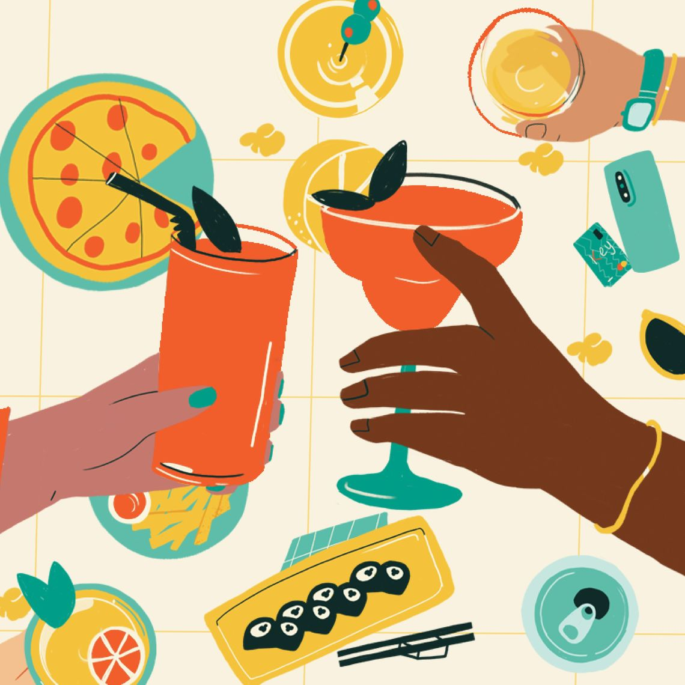
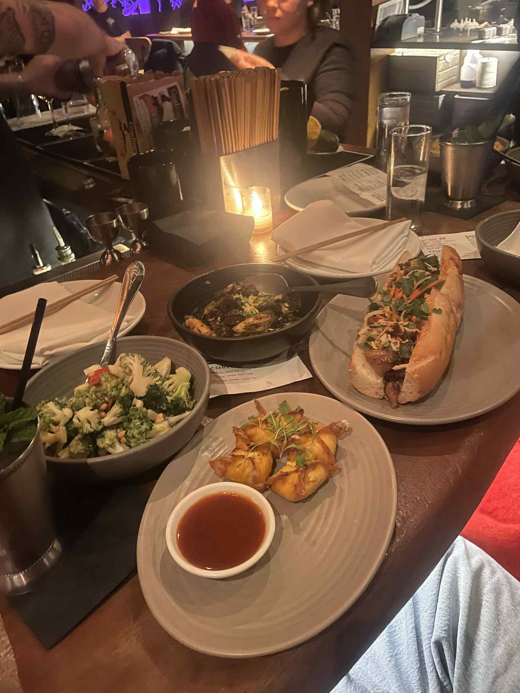

Introduction:
My little just turned twenty one and we have not had a real catch up in a long time. Since she has never been to a Philadelphia happy hour I wanted to take her somewhere that feels warm fun and memorable for her first time. Instead of scrolling through endless lists of restaurants I decided to ask an LLM for help. I wanted to see whether it could actually recommend Center City spots that match the kind of atmosphere I was looking for.
Prompt:
I want to take my little to a happy hour in Center City Philadelphia. She just turned twenty one and has never been to a happy hour before. Can you recommend restaurants or bars that have good food good drinks and a cute atmosphere. I want places that feel fun welcoming and highly rated.
Response:
Absolutely! Center City Philadelphia has a fantastic happy hour scene with plenty of stylish, welcoming spots that offer great food, drinks, and vibes—perfect for a 21st birthday celebration! Here are some highly rated places with good happy hour deals, delicious food, and inviting atmospheres:
🥂 Trendy & Fun Vibe
El Vez 🌮 What to Expect: A colorful, energetic Mexican restaurant with funky decor and a fun, welcoming feel. 🍹 Happy Hour: $4-$7 beers, margaritas, and small bites. 📍 Location: 121 S 13th St ⭐ Perfect For: A festive intro to happy hour with great margaritas and tacos.
Barcelona Wine Bar 🍷 What to Expect: A chic, rustic tapas bar with a warm European vibe. 🍷 Happy Hour: $7 wine, $5 beer, and tasty discounted tapas. 📍 Location: 1709 E Passyunk Ave (technically a bit outside Center City but very worth it!) ⭐ Perfect For: Sharing a bunch of small plates and sipping sangria in a cozy setting.
Charlie Was a Sinner. 🍸 What to Expect: A dark, moody vegan cocktail bar with stylish interiors. 🍸 Happy Hour: $5-$7 cocktails and small bites (check times – they vary!) 📍 Location: 131 S 13th St ⭐ Perfect For: Instagrammable cocktails and cool ambiance.
🍕 Casual & Cool Hangouts
Tria Cafe 🍷 What to Expect: Wine-focused cafe with bites and a European café vibe. 🍷 Happy Hour: “Sunday School” specials every Sunday, and solid wine & beer deals midweek. 📍 Locations: 123 S 18th St (Rittenhouse) + 1137 Spruce St (Wash West) ⭐ Perfect For: Learning about wine & cheese in a low-key but lovely setting.
Mission Taqueria 🌮 What to Expect: Bright, airy, modern taco spot with great drinks and energy. 🍹 Happy Hour: Discounted margaritas, beer, and tacos. 📍 Location: 1516 Sansom St, 2nd Floor (enter via staircase) ⭐ Perfect For: A lively crowd and fun beginning to an evening out.
Sampan / Graffiti Bar 🍱 What to Expect: Modern Asian fusion with a cool speakeasy feel in the back. 🍹 Happy Hour: Great deals on dumplings, baos, and cocktails at Graffiti Bar (weather permitting). 📍 Location: 124 S 13th St ⭐ Perfect For: Asian-inspired bites and a hip hidden patio.
🍸 Upscale & Stylish
The Love. 🍷 What to Expect: Elegant-yet-approachable space with excellent hospitality and food. 🍷 Happy Hour: While they don’t have a classic happy hour, their bar scene is stellar for celebrating special nights. 📍 Location: 130 S 18th St ⭐ Perfect For: A toast-worthy evening with upscale New American fare.
Harper’s Garden 🌿 What to Expect: A relaxed, greenery-covered garden oasis (open year-round with heaters). 🍹 Happy Hour: $6 wine, $5 beer, $7 select cocktails, plus bar bites. 📍 Location: 31 S 18th St ⭐ Perfect For: Outdoor city vibes and a slightly romantic atmosphere.
Tips: 🕓 Happy Hour is usually Monday–Friday from around 4–6 or 5–7pm. 📸 Many restaurants are Instagrammable and fun to photograph—perfect for a 21st birthday celebration.
If you want an easy night, hop around Midtown Village (near 13th & Sansom) — walkable, lively, and full of great bars and restaurants.
Let me know if you two would prefer quieter or louder spots, wine bars or cocktail lounges, and I can tailor the list even more closely to your vibe!
Reflection:

what we ate!
I actually liked the list the LLM gave me. Some of the places were ones I already knew and love, and a few were completely new which made me feel like I was getting real suggestions rather than just the same five spots everyone knows. The little descriptions of the vibe and food helped me imagine what the night could feel like which made the planning easier.
At the same time I could tell the model was pulling from reviews and patterns more than real experience. A couple of the descriptions felt a bit copy and paste and it even included a place that was not technically in Center City. It reminded me that an LLM understands information well but not the emotional side of choosing a spot for someone’s first happy hour.
Overall it gave me a strong starting point but the final choice still depends on what feels right for me and my little. The LLM helped me brainstorm but the moment itself is something only we can create.